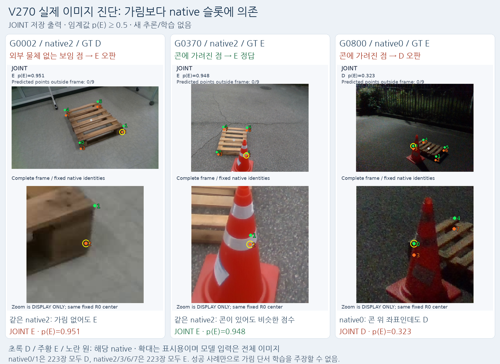

공동 출력과 학습은 구현됐지만, 이번 짧은 실험은 외부 가림 판정을 개선하지 못했습니다. 가림만 학습한 대조군→공동 학습에서 보임 오판은511→471개로 줄고, 가림 누락은51→59개로 늘었습니다. 새 모델은 채택하지 않습니다.
더 중요한 원인이 확인됐습니다. 합성 학습에서 아래쪽 native2/3/6/7의 strict 보임 D가 모두0개였고, 새 모델은 실사223장 모두에서 이 네 점을 가림 E로 냈습니다. 이는 이미지의 가림 단서보다 슬롯 번호의 사전값에 의존하는 문제입니다. 초기 모델의 위치+가림 공동 학습 일반이 불가능하다는 결론은 아닙니다.

G2는 가림 없는 목재 native2인데 E(.951), G370은 콘 뒤 native2인데 E(.948)입니다. G800의 native0은 콘 위 위치를 유지해도 D(.323)입니다. 성공 사례 G370 하나만으로 콘 구분을 배웠다고 해석할 수 없습니다. 확대는 표시용이며 실제 모델은 전체 이미지를 입력받습니다.
실제19사례 전체 이미지·고정 확대 · 실사 슬롯별 출력223장 전체 · 픽셀 검토와 해석 한계
G300·G996은 기존 라벨과 표시 위치 해석에 이견이 있는 경계 사례입니다. 원래 평가 라벨은 보존했으며, 이 둘을 명백한 가림 전이 실패의 대표 근거로 사용하지 않았습니다.
| 방법 | 보임 정답 / 오판 / 보류 | 가림 정답 / 누락 / 보류 | 보임 precision / recall | 가림 precision / recall | 균형 recall | 보류율 |
|---|---|---|---|---|---|---|
| 가림만 학습 | 636 / 511 / 0 | 39 / 51 / 0 | 92.58% / 55.45% | 7.09% / 43.33% | 49.39% | 0.00% |
| 위치+가림 공동 학습 | 676 / 471 / 0 | 31 / 59 / 0 | 91.97% / 58.94% | 6.18% / 34.44% | 46.69% | 0.00% |
행의 보임 정답/오판/보류는 GT D→예측 D/E/U, 가림 정답/누락/보류는 GT E→예측 E/D/U입니다. 임계값은 실사 평가 전 고정한 E확률0.5이며 새 보류 게이트는 없습니다. 전체1784 native 모서리 중 등록 D/E1260점에서는 공동 학습 보임681/1168(58.30%), 가림33/92(35.87%)입니다. 과거 crop/query 가용성 제한을 새 전체 이미지 모델에 강제로 적용하지 않았고, 이전 모델과 같은 비교는 PRIMARY1237로 따로 고정했습니다.
| 방법 | 보임 정답 / 오판 / 보류 | 가림 정답 / 누락 / 보류 | 보임 precision / recall | 가림 precision / recall | 균형 recall | 보류율 |
|---|---|---|---|---|---|---|
| 가림만 학습 | 347 / 269 / 0 | 14 / 15 / 0 | 95.86% / 56.33% | 4.95% / 48.28% | 52.30% | 0.00% |
| 위치+가림 공동 학습 | 360 / 256 / 0 | 12 / 17 / 0 | 95.49% / 58.44% | 4.48% / 41.38% | 49.91% | 0.00% |
| 방법 | 보임 정답 / 오판 / 보류 | 가림 정답 / 누락 / 보류 | 보임 precision / recall | 가림 precision / recall | 균형 recall | 보류율 |
|---|---|---|---|---|---|---|
| 가림만 학습 | 289 / 242 / 0 | 25 / 36 / 0 | 88.92% / 54.43% | 9.36% / 40.98% | 47.70% | 0.00% |
| 위치+가림 공동 학습 | 316 / 215 / 0 | 19 / 42 / 0 | 88.27% / 59.51% | 8.12% / 31.15% | 45.33% | 0.00% |
자기 가림은 사용자 계획대로 별도 기하 판정 대상이며 D/E 학습·주 성능에서 제외했습니다. 자기 가림에서 E를 내더라도 외부 물체 구분 성공으로 집계하지 않습니다. 모든 구간·자기 가림·좌표 진단 원표 · 전체 비교 CSV · 외부 가림90점 전수
| 방법 | 보임 정답 / 오판 / 보류 | 가림 정답 / 누락 / 보류 | 보임 precision / recall | 가림 precision / recall | 균형 recall | 보류율 |
|---|---|---|---|---|---|---|
| 이전 V269 DeCLIP (참고) | 655 / 492 / 0 | 89 / 1 / 0 | 99.85% / 57.11% | 15.32% / 98.89% | 78.00% | 0.00% |
| 이전 V267 Surgery (참고) | 595 / 552 / 0 | 84 / 6 / 0 | 99.00% / 51.87% | 13.21% / 93.33% | 72.60% | 0.00% |
| 기존 실사 학습 가림 모델 (참고) | 655 / 319 / 173 | 83 / 3 / 4 | 99.54% / 57.11% | 20.65% / 92.22% | 74.66% | 14.31% |
이전 DeCLIP/Surgery는 원래 query의 대상 마스크 값을 읽는 proxy이고, 이번 모델은 전체 이미지의 초기 KP branch에서 직접 semantic E를 냅니다. 입력·목표·구조가 달라 이 표는 역사적 참고입니다. 공동 학습 효과의 주 대조는 동일 초기화·자료·300회인 VIS_ONLY↔JOINT입니다. CAL_LEGACY는 기존 실사 학습 이력이 있는 비교군입니다.
원래 YOLO26n R0 가중치를 시작점으로 위치만(XY_ONLY), 가림만(VIS_ONLY), 위치+가림(JOINT)을 각각300회, 총900 optimizer update 학습했습니다. 전체 RGB에 reflect101 테두리100px 후 square640 letterbox를 적용하고, 같은 합성768장·seed17·batch8·고정 draw를 썼습니다. 추가 fit의 검증235장은 이번 학습에서 제외했습니다. R0의 원래 사전 학습과 중복되지 않는 독립 영상인지는 확인하지 않았습니다.
빠른 확인 범위: backbone/neck·검출·최종27채널(x/y/기존 canvas confidence)은 동결하고, 기존 KP shared cv4 stem과 새9채널 E head를 학습했습니다. centroid E는 제외합니다. 전체 네트워크를 처음부터 공동 학습한 실험은 아닙니다. 원래 R0 confidence는 좌표가 라벨되고 이미지 안에 있는지에 대한 값이므로 보임/가림 정답으로 재사용하지 않았습니다.
새 E 손실은 existing external9ray fraction=0을 D,≥0.5를 E로 삼고 partial·self·out-of-frame은 unknown 처리합니다. 가려져도 알려진 좌표는 위치 손실에 포함하며 E 유효성에 따라 좌표를 지우지 않습니다. M4 마스크 픽셀을 가림 GT로 사용한 실험도 아닙니다. 학습 전 프로토콜 · 학습 범위·optimizer 명세 · 공유 stem의 위치/E gradient 독립 확인 · 채널→현재 native 대응223장
현재 raw채널은 native 순서와 identity이며 perm_v4를 다시 적용하지 않았습니다. 실제223장 어노테이션은 fit·정규화·임계값·체크포인트 선택에 사용하지 않았습니다. 다만223장은 여러 차례 확인한 개발 평가이며 독립 최종 검증셋은 아닙니다.
TRAIN6144모서리 중 D2417/E556만 strict 가림 학습 대상입니다. partial1758·self962·outside451은 E 손실에서 제외했습니다. 아래쪽 native2/3/6/7은 TRAIN D=0/0/0/0, E=95/98/28/26입니다. 위쪽0/1/4/5는 D=598/601/608/610, E=74/74/77/84입니다. 이는 원본 합성 전체에 아래쪽 보임이 없다는 뜻이 아닙니다. 이번에 strict D=0만 남기고0<fraction<0.5를 unknown으로 제외하면서, 원래0.5 기준이라면 음성 후보인582/595/218/252개도 빠졌습니다. 이 감독 선택이 E-only 슬롯을 만든 점이 이번 설계의 한계입니다. 그렇다고 이를 검증 없이 실제 보임 정답으로 바꿀 수도 없습니다. 전체 D/E class balancing만으로 각 슬롯의 지원 부족을 없앨 수 없습니다.
추가 학습 DEV925점에서 공동 학습 D705/733(96.18%)·E96/192(50.00%), 균형 recall73.09%입니다. 이미지를 전혀 안 보고 위쪽=D·아래쪽=E로만 찍는 사전값도 D733/733·E86/192, 균형 recall72.40%를 냅니다. 이번 합성 점수만으로 시각적인 가림 구분을 학습했다고 주장할 수 없습니다. 실사 ALL등록 E정답33개 중26개도 항상E인 네 슬롯에서 나오고, 같은 슬롯이 보임442개를 오판합니다.
첫 hit의 물체 owner가 저장돼 있지 않아 바닥 접촉이 external proxy에 섞였는지는 확정하지 못했습니다. 확인된 것은 슬롯별 D지원 부족과 실제 출력 편향입니다. 라벨 proxy·가상 cuboid 모서리와 눈으로 보이는 모서리의 의미 차이, 짧은 학습, 실사 전이의 기여를 이번 한 실험으로 각각 확정할 수는 없습니다. 합성 DEV부터 E recall이50%이므로 모든 실패를 실사 전이 탓으로 돌려서도 안 됩니다.
추가 슬롯 교사 감사·정적 사전값 비교 · 원래 SYNDEV 결과 · 합성 원본 RGB·cuboid·M0/M4·9ray 정의 대조
수동 보임857점의 위치 오차 중앙값은 동일 square640 R0 5.02px, 위치만4.33px, 공동4.56px, 가림만62.80px입니다. 위치 손실 없이 공유 KP stem을 바꾼 VIS_ONLY는 좌표가 손상됐고 JOINT는 이를 억제했습니다. 이는 공동 가림 분류의 성공을 뜻하지 않습니다. 기존 입력좌표 오차≤3px인 수동 보임376점에서도 공동 모델은93점을 가림으로 오판했습니다. 새 PnP나 자세 최적화는 하지 않았습니다.
현재는 새 가림 판별기를 적용할 단계가 아닙니다. 공동 출력 구조는 사용할 수 있고, 다음 검증의 병목은 합성 감독 데이터입니다.
설치·저장 데이터 CPU 재현 명령 · 기계 판독 요약 · 루트 독립 NPZ/CSV 수치 검산 · 3종 실제 학습 완료·SHA · 실사 출력 동결
보관한 실패: 평가 parser가 비D/E 상태를 거부한 v1~v3, 시각화 Pillow 환경 차이 v1, CPU sigmoid 재계산의 최초8e-8 허용오차 실패입니다. 평가 v4와 시각화 v3가 최종입니다. CPU replay v2는 sigmoid 산술만 float32 epsilon1.2e-7로 명시하며 원래 실패와 변경 계약을 보존했습니다. 모델·예측·0.5 결정·학습은 바뀌지 않았고 모든1784점의 결정은 정확히 같습니다.5개 실제 pyramid fixture의3종 head CPU 오차는 원래1e-3 기준을 통과했습니다.
최초 CPU 실패 · 명시한 산술 계약 · CPU head replay PASS · 실사 전체 metric CPU replay PASS · SYN7산출물 byte 동일